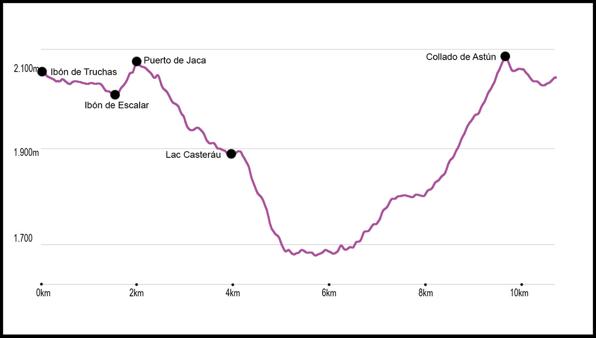

Lac Casterau – Collado de Astún
Tipo: Circular
- Altura mínima: 1.667 m
- Altura máxima: 2.130 m
- Distancia total: 10.7 km
Una vez bajamos del telesilla “Los Lagos”, tomamos la pista hacia el Ibón de Escalar o de Ranas. La pista es llana, y una vez llegados a su final y divisado el lago, tomamos una senda y bajamos hasta él, dejándolo a nuestra izquierda. Una vez pasado el ibón, seguimos una senda muy marcada, que ascendiendo y haciendo una curva a la derecha, llega al collado de Los Monjes o Puerto de Jaca, donde encontramos un plano y una señal indicativa. A partir de este momento, entramos en parque nacional, donde habrá que cumplir la normativa del mismo (entre otras no se pueden llevar perros).
En el collado ya veremos la gran mole del Midi d´Ossau, y justo en este punto, bajaremos por una senda bien marcada a media ladera por pequeños postes rojos y blancos, que nos llevarán hasta el cruce donde el camino se desvía hacia el Refugio y Lac de Ayous, Lac de Bersau o hacia el Lac de Casteraut.
Del cruce seguimos recto hacia el lago, el cuál bordeamos por la derecha, y subimos a un pequeño collado. Pasamos en este punto por diversos agujeros que se producen en la roca caliza y en algunas se pierden los cursos del agua. Una vez sigamos el barranco y continuemos hasta el siguiente collado, podremos observar el valle que forma el rio Bious, y desde aquí bajaremos por una senda que zigzagea hasta llegar a una pista. Ya en ella, seguimos a nuestra derecha subiendo por un tramo cementado y donde hay varias casas de pastores (en la segunda podemos encontrar una fuente). Llegados a este punto, seguimos por el valle que se abre y alcanzamos un pequeño puente. Por una senda que se pierde, avanzamos por la derecha del valle, el cual se encajona hasta llegar a otra zona abierta. En esta zona de pradera se pierde la senda, pero la atravesamos y vamos ascendiendo ligeramente hacia la derecha por la zona más fácil. Ya se empieza a ver el collado de Astun, observando en la lejanía los carteles del parque nacional.
Una vez en el collado, en el que volveremos a entrar a España, empezaremos la última bajada, la cual nos llevará por un cómodo y ancho sendero hasta el ibón de Truchas, justo al lado de la silla desde la que hemos empezado nuestra ruta.

- Tiempo: 5 h
- Desnivel positivo: 682 m
- Desnivel negativo: 682 m